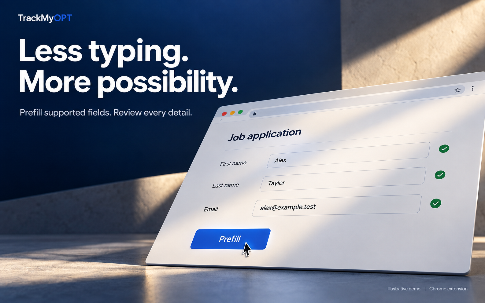
01 · Smart PrefillStore story candidate
Prefill supported fields. Review every detail.
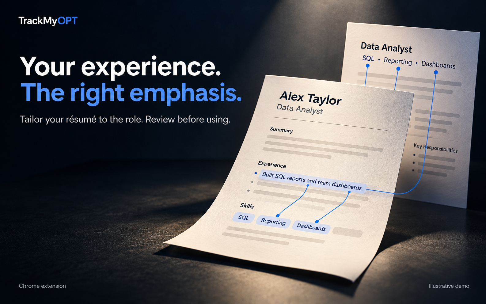
02 · Tailored résumésStore story candidate
Tailor your résumé to the role. Review before using.
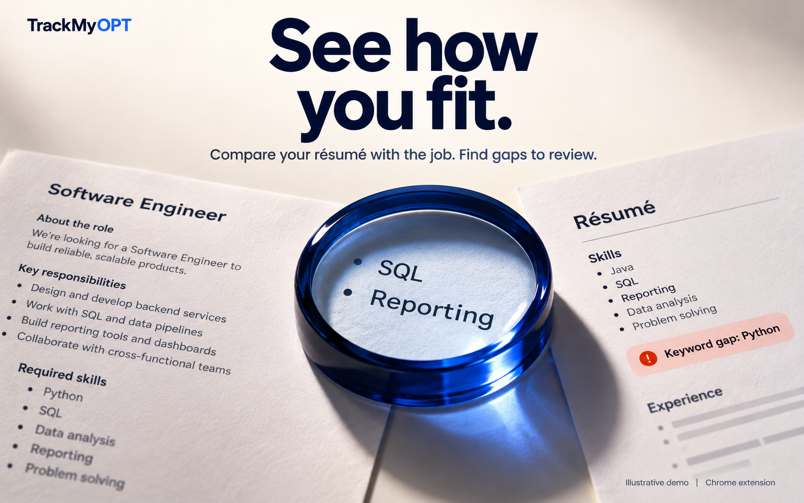
03 · Job-fit analysis
Compare your résumé with the job. Find gaps to review.
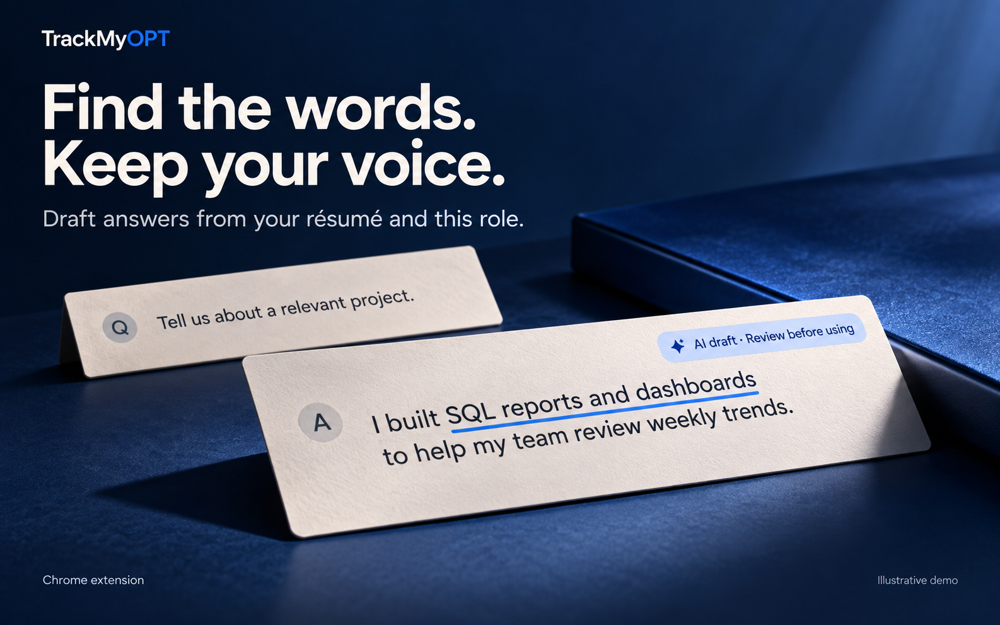
04 · Screening answers
Draft answers from your résumé and this role.
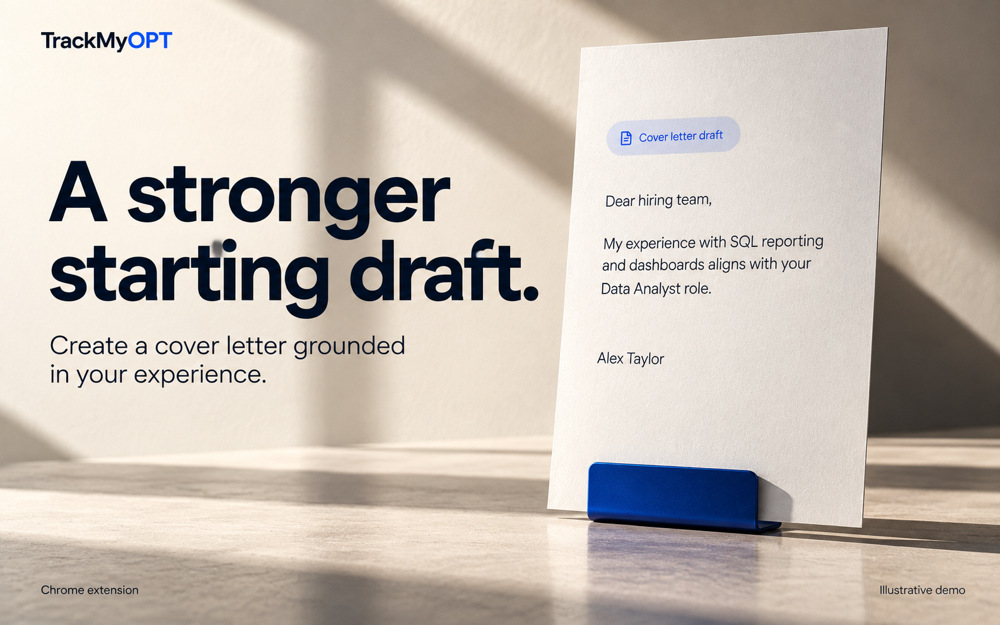
05 · Cover letters
Create a cover letter grounded in your experience.
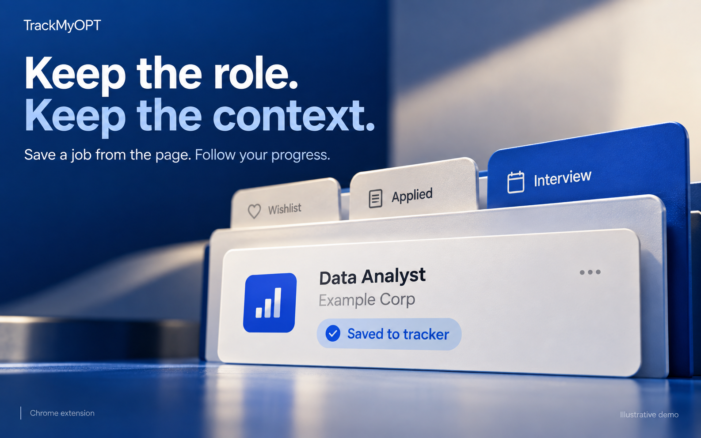
06 · Job trackerStore story candidate
Save a job from the page. Follow your progress.
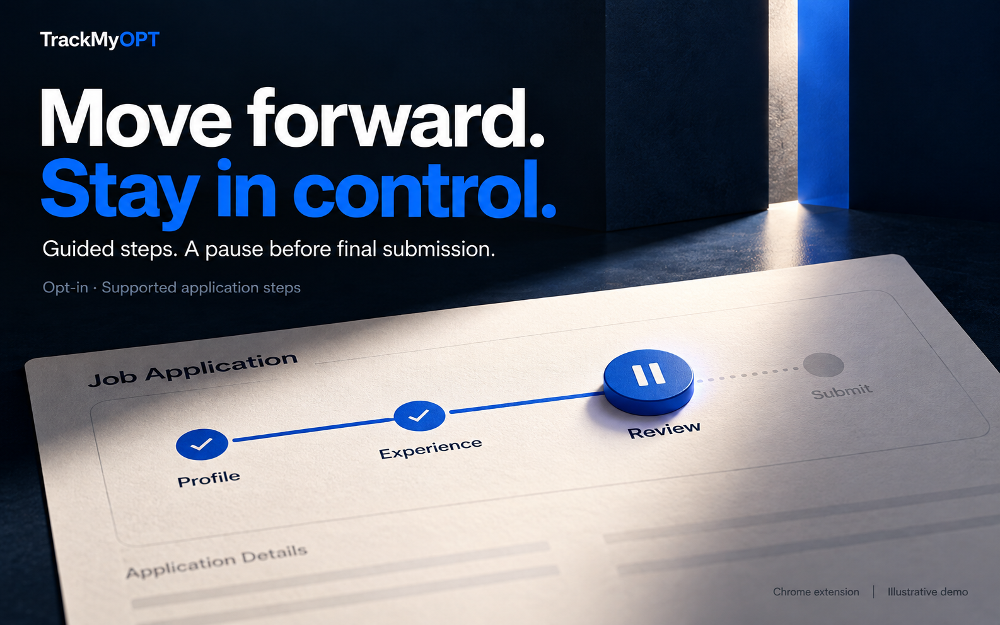
07 · Guided AutopilotStore story candidate
Guided steps. A pause before final submission.
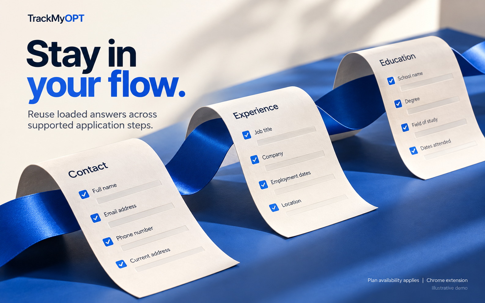
08 · Continuous Prefill
Reuse loaded answers across supported application steps.
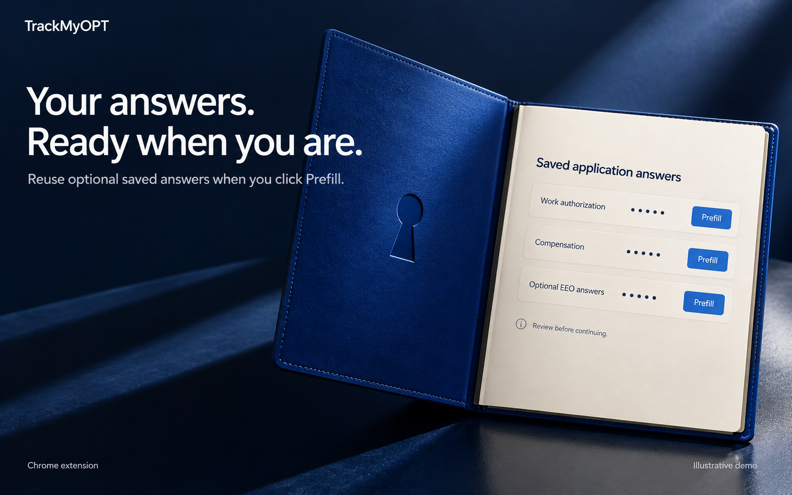
09 · Saved private answers
Reuse optional saved answers when you click Prefill.
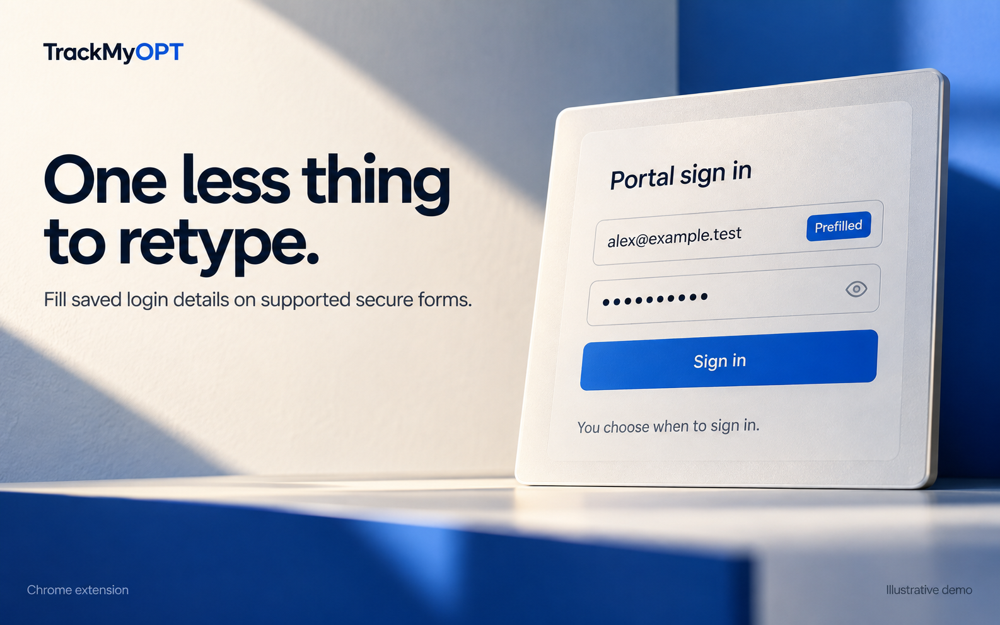
10 · Portal login prefill
Fill saved login details on supported secure forms.
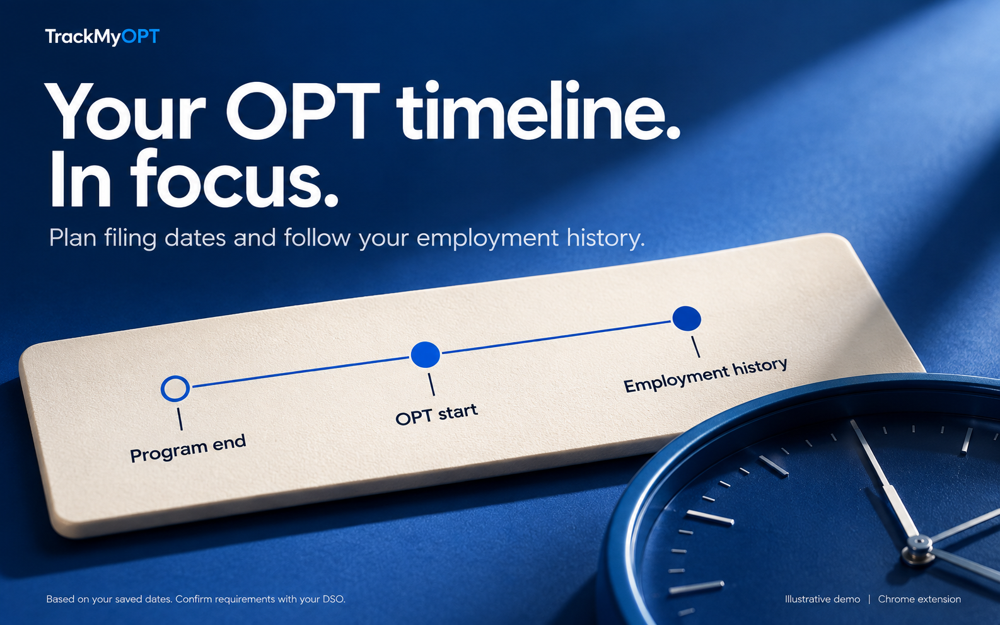
11 · OPT toolsStore story candidate
Plan filing dates and follow your employment history.
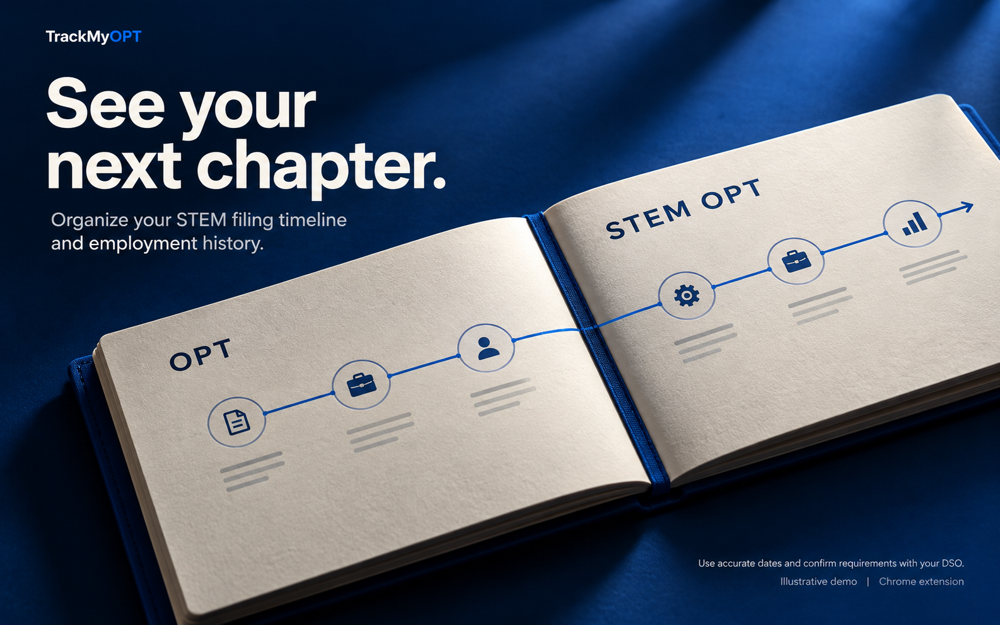
12 · STEM OPT tools
Organize your STEM filing timeline and employment history.
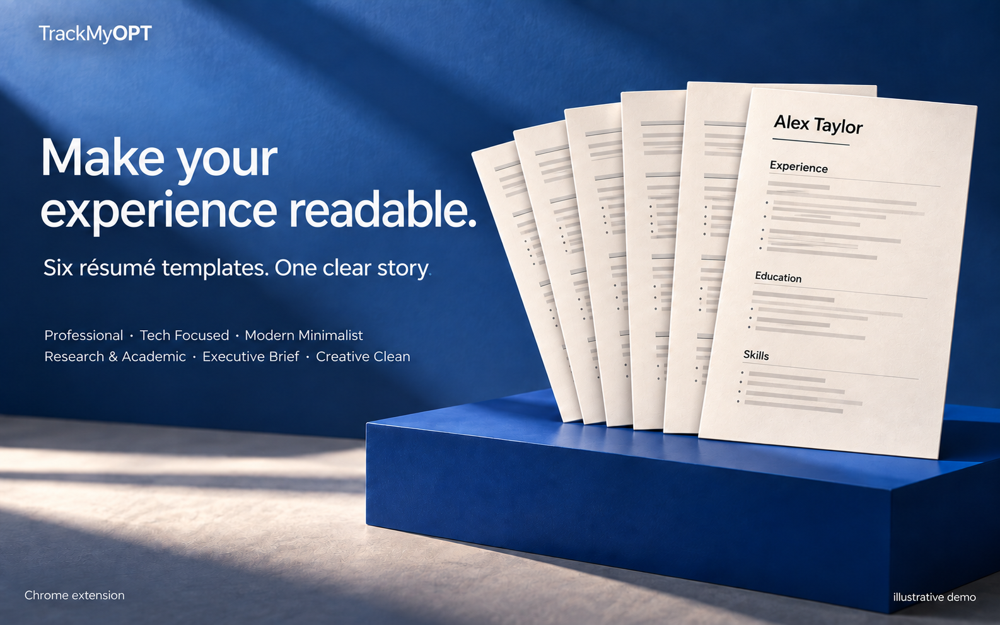
13 · Résumé templates
Six résumé templates. One clear story.
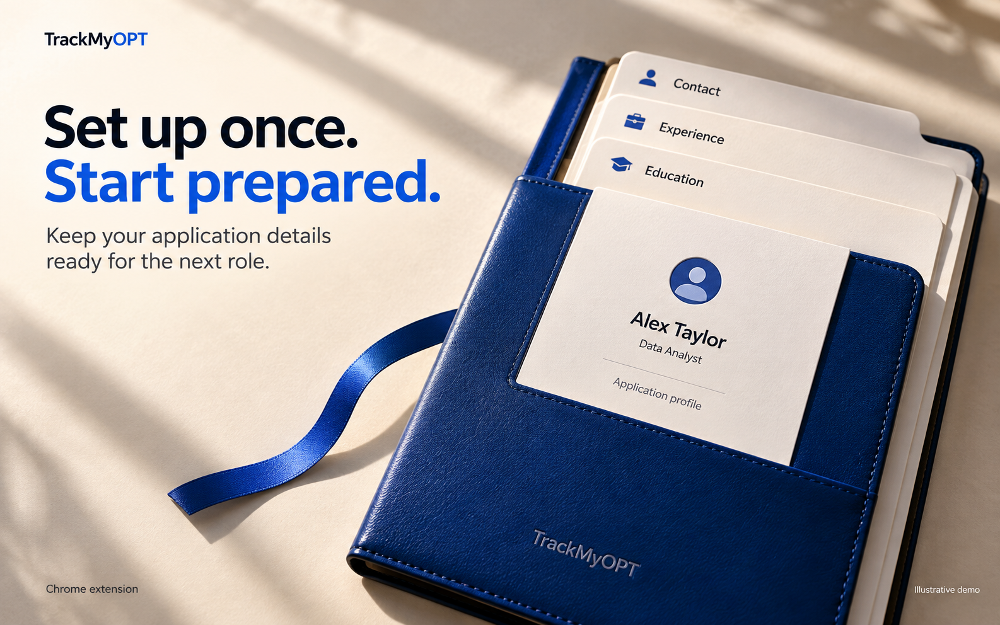
14 · Application profile
Keep your application details ready for the next role.